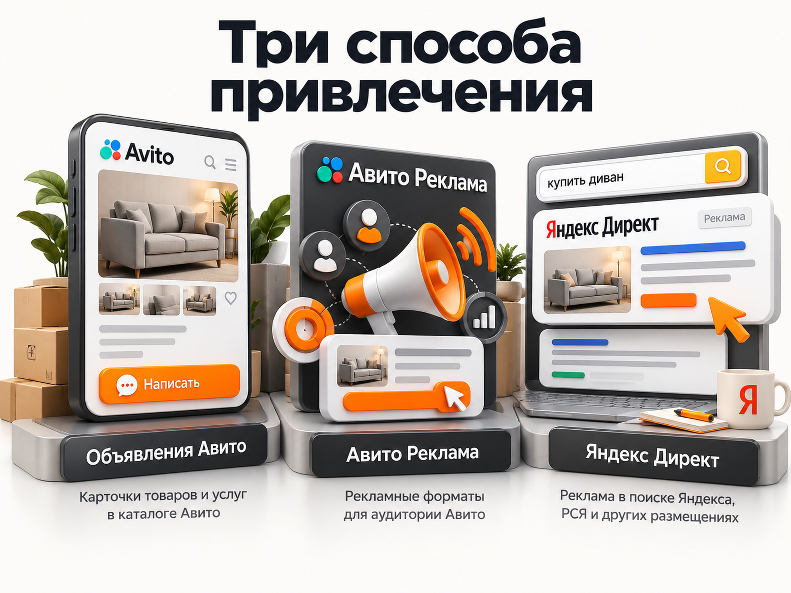
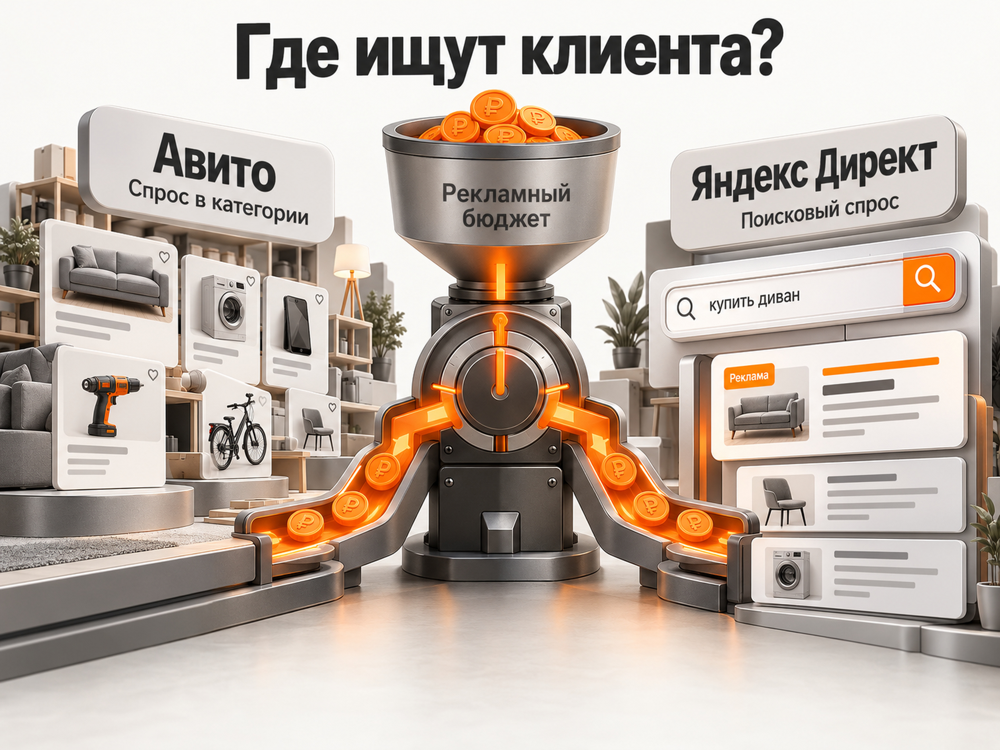
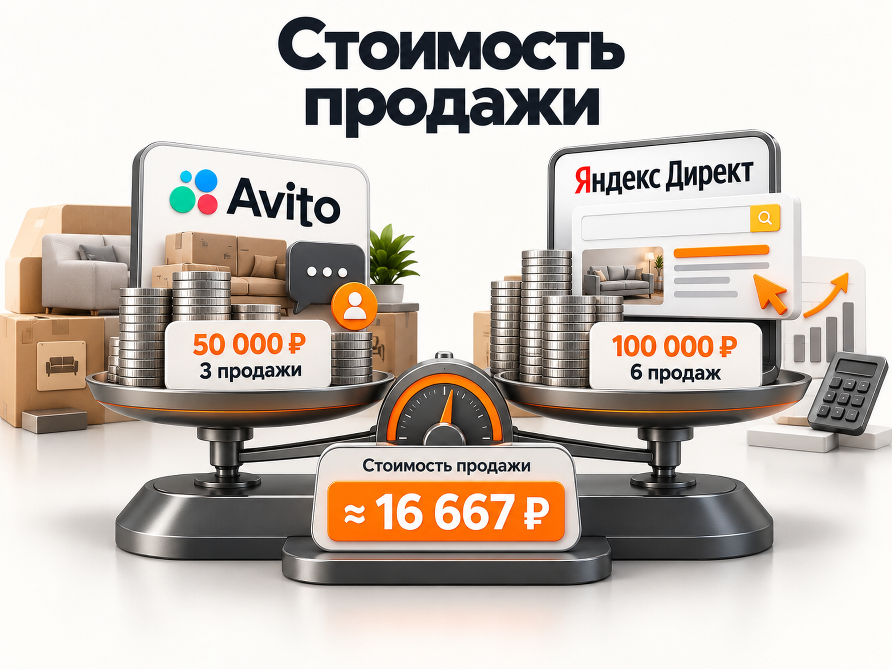

Блог о платном трафике
Авито или Яндекс Директ: что выбрать для рекламы бизнеса
Авито лучше тестировать, если покупатели уже ищут ваш товар или услугу внутри площадки. Яндекс Директ логичнее выбирать, когда клиенты формулируют потребность в поиске Яндекса, а бизнесу необходимы гибкая настройка рекламы и аналитика.
Если спрос есть на обеих площадках, заранее определить более выгодный канал невозможно. Нужно сравнивать стоимость целевых обращений, квалифицированных лидов и реальных продаж.
При ограниченном бюджете я бы не запускал все инструменты одновременно. Сначала проверил бы спрос, конкуренцию и экономику привлечения клиентов, а затем выбрал один приоритетный канал.
Какие рекламные инструменты мы сравниваем
На Авито существуют два разных способа продвижения, которые не стоит смешивать.
1. Объявления Авито и их платное продвижение.
Бизнес размещает карточки товаров или услуг внутри каталога. Покупатель находит предложение, изучает фотографии, цену, отзывы и связывается с продавцом через чат или звонок.
Продвижение помогает получить больше внимания к объявлениям. Однако результат прежде всего зависит от спроса внутри конкретной категории.
2. Авито Реклама.
Это отдельная рекламная платформа. Через неё можно показывать рекламные объявления аудитории Авито, в том числе направляя пользователей на внешний сайт.
В 2026 году возможности платформы расширились. В мае появился автотаргетинг, который подбирает аудиторию с учётом рекламного текста, креатива и поведения пользователей. В августе добавили таргетинг по ключевым словам на основе поисковых запросов внутри Авито.
Таким образом, Авито Реклама уже позволяет работать не только с аудиторными интересами, но и со сформированным спросом.
С октября 2026 года Авито Реклама также поддерживает оптимизацию по конверсиям с сайта, хотя пока эта стратегия работает в бета-версии.
3. Яндекс Директ.
Рекламная система для привлечения клиентов через поиск Яндекса, Рекламную сеть Яндекса и другие доступные рекламные размещения.
Директ позволяет использовать поисковые фразы, аудиторные сигналы, ретаргетинг и автоматические стратегии. Кампании могут оптимизироваться под целевые действия, например отправку заявки или покупку.
Главное различие: обычные объявления Авито работают внутри товарно-сервисного каталога, Авито Реклама использует отдельный рекламный инструментарий, а Яндекс Директ предоставляет собственную систему управления рекламным трафиком и конверсиями.

Обычные объявления Авито, Авито Реклама и Директ привлекают клиентов разными способами.
Главное отличие Авито от Яндекс Директа
На Авито при продвижении обычных объявлений особенно важно качество предложения внутри категории. В Яндекс Директе больше возможностей управлять привлечением посетителей и оптимизировать рекламу на основании их действий.
Для обычных объявлений Авито большое значение имеют:
- спрос в конкретной категории и регионе;
- место объявления в выдаче;
- фотографии и описание;
- цена и условия предложения;
- рейтинг, отзывы и доверие к профилю;
- конкуренция и используемые платные инструменты.
Даже качественно оформленное объявление не создаст большой поток обращений, если пользователи практически не ищут такой продукт на площадке.
У Яндекс Директа другая механика. Например, стратегия «Максимум конверсий» автоматически подбирает ставки, стремясь получить больше целевых действий с учётом установленных ограничений.
Но для эффективной оптимизации нужны корректные цели, достаточный бюджет и данные о конверсиях. При небольшом количестве заявок автоматические стратегии могут работать нестабильно.
Важно также учитывать, что Авито Реклама использует собственные алгоритмы и таргетинги. Поэтому сравнивать её с обычным платным поднятием объявлений некорректно.
Подробнее о настройке рекламных кампаний я рассказал в статье «Как настроить Яндекс Директ».
Оптимизация по конверсиям в Авито Рекламе
С октября 2026 года в Авито Рекламе появилась стратегия «Максимум конверсий». Она работает в бета-версии и позволяет оптимизировать рекламу с переходом на сайт под конкретные действия пользователей: отправку заявки, добавление товара в корзину или покупку.
Для запуска необходимо установить счётчик Авито Рекламы, настроить события на сайте и выбрать цель «Целевые действия». Оплата производится за клики, но алгоритм старается привлекать пользователей с наибольшей вероятностью конверсии.
Авито рекомендует выбирать событие, которое приносит не менее 15 конверсий в день. Обучение стратегии занимает 14 дней. В этот период желательно сохранять стабильный бюджет и не менять настройки без необходимости.
Это важное изменение: теперь Авито Реклама, как и Яндекс Директ, умеет оптимизировать кампании под результат, а не только под переходы. Однако новая стратегия относится именно к рекламе с переходом на сайт, а не к обычному платному продвижению объявлений внутри Авито.
Как проверить спрос на Авито и в Яндексе перед запуском
Чтобы выбрать между Авито и Яндекс Директом, сначала нужно проверить, где потенциальные клиенты ищут конкретный товар или услугу.
Я бы использовал следующий порядок.
Шаг 1. Проверить выдачу Авито
Введите основные названия товаров или услуг в поиске Авито и установите нужный регион.
Посмотрите:
- сколько представлено похожих предложений;
- насколько точно объявления соответствуют вашему продукту;
- есть ли профессиональные продавцы и исполнители;
- насколько подробно оформлены объявления;
- встречаются ли активные профили с отзывами;
- какие цены и условия предлагают конкуренты.
Наличие развитой категории подтверждает, что предложение соответствует формату площадки. Но само количество объявлений ещё не доказывает большой покупательский спрос.
Если доступна статистика спроса по категории, следует проверить её отдельно.
Шаг 2. Проверить спрос в Яндексе
Соберите основные коммерческие запросы, например:
- «кухни на заказ Ростов»;
- «установка кондиционера цена»;
- «производство деталей по чертежам»;
- «бухгалтерское обслуживание ООО».
Проверьте частотность через Яндекс Вордстат, изучите поисковую выдачу и оцените рекламную конкуренцию.
Для предварительной оценки рекламных расходов можно воспользоваться прогнозом бюджета Яндекс Директа.
Шаг 3. Сравнить намерения покупателей
Одинаковые товары и услуги пользователи могут искать по-разному.
Например, покупатель кухни на заказ может сравнивать предложения, фотографии и цены на Авито. Другой пользователь ищет в Яндексе компанию с собственным производством, гарантией и портфолио.
Оба обращения могут быть целевыми, но ожидания пользователей различаются.
Шаг 4. Проверить соответствие предложения
На Авито важно, чтобы товар или услугу можно было понятно представить в формате объявления.
На сайте, который рекламируется через Директ, больше возможностей подробно объяснить сложный продукт, показать проекты, условия сотрудничества и преимущества компании.
Шаг 5. Выбрать приоритетный канал
Если категория Авито активна, предложение подходит под её формат, а сайт пока не готов, разумно начать с объявлений.
Если пользователи ищут сложную услугу в Яндексе, а на Авито соответствующей аудитории почти нет, приоритетнее Директ.
При наличии подходящего спроса на обеих площадках окончательный выбор нужно делать после тестирования.
Когда я бы выбрал Авито
Авито стоит рассматривать в первую очередь для товаров и услуг, которые покупатели привыкли сравнивать внутри каталога предложений.
Типичные направления:
- ремонт и строительство;
- мебель и кухни на заказ;
- автомобили и связанные услуги;
- бытовые услуги;
- оборудование;
- товары на заказ;
- отдельные производственные услуги.
Это не гарантированно прибыльные категории. В каждом случае нужно отдельно оценивать спрос, регион и конкуренцию.
Особенно я бы посмотрел в сторону Авито, если поисковая реклама в Яндекс Директе стала слишком дорогой.
Например, в нише кухонь на заказ высокая конкуренция может приводить к росту стоимости переходов из поиска. Даже качественная настройка не позволяет полностью устранить влияние рекламного аукциона.
Если одновременно на Авито существует развитая категория, есть смысл протестировать дополнительный источник клиентов.
При этом дешёвые обращения не гарантируют выгодные продажи. Пользователи Авито могут активно сравнивать цены и отправлять сообщения нескольким продавцам одновременно.
Поэтому качество обращений необходимо оценивать отдельно.
Когда я бы выбрал Яндекс Директ
Яндекс Директ я бы ставил первым, когда покупатель формулирует конкретную потребность в поисковой системе.
Например:
- «налоговый консультант для бизнеса»;
- «юридическое сопровождение сделки»;
- «производство деталей по чертежам»;
- «лечение прикуса»;
- «внедрение CRM».
Здесь клиент уже ищет решение определённой задачи. Поисковая реклама позволяет показать предложение непосредственно в этот момент.
Кроме поиска, в Директе можно использовать РСЯ, ретаргетинг и автоматические рекламные кампании.
На моих B2B-проектах встречались разные сценарии: где-то основной поток заявок давал Поиск, а где-то РСЯ и автоматические кампании.
Поэтому нельзя утверждать, что внутри Директа существует один универсальный формат для любого бизнеса.
Для сложных B2B-услуг, корпоративного консалтинга и нестандартных продуктов полноценный сайт нередко становится важным преимуществом. На нём можно подробно раскрыть компетенции, показать примеры работ и объяснить условия сотрудничества.
Подробнее об особенностях этих инструментов:
Поиск или РСЯ в Яндекс Директе.
Авито или Яндекс Директ: сравнение по основным критериям
Универсального победителя между Авито и Яндекс Директом нет. У площадок разные способы привлечения клиентов, требования к подготовке и возможности аналитики.
Для наглядности сравним обычные объявления Авито с рекламой через Яндекс Директ.
| Критерий | Авито | Яндекс Директ |
|---|---|---|
| Где находится клиент | В каталоге товаров и услуг | В поиске Яндекса, РСЯ и других размещениях |
| Основной источник спроса | Пользователи категории Авито | Поисковые запросы и подходящие аудитории |
| Сайт для старта | Не обязателен | Обычно нужен сайт или другая подходящая посадочная |
| Куда приходит обращение | В чат или через звонок | На сайт, в форму, звонок или другой предусмотренный канал |
| Что влияет на результат | Предложение, профиль, фотографии, цена, конкуренция | Семантика, аудитория, объявления, ставки, сайт, стратегия |
| Автоматизация | Автотаргетинг, аудиторные инструменты и оптимизация по конверсиям с сайта (бета) | Автоматические стратегии с оптимизацией по целям |
| Аналитика | Статистика объявления, обращения и данные продаж | Директ, Метрика, коллтрекинг, CRM |
| Старт с небольшим бюджетом | Возможен в отдельных категориях | Зависит от стоимости трафика и нужного числа конверсий |
| Масштабирование | Ограничивается спросом внутри категории и охватом | Поиск, РСЯ, аудитории и другие форматы расширяют возможности |
| Основной риск | Много обращений без реальных покупателей | Дорогой трафик и недостаточная конверсия |
Для Авито Рекламы сравнение будет несколько другим, поскольку она поддерживает отдельные рекламные форматы, таргетинги и переходы на внешние сайты.
Выбирать нужно не платформу с самым дешёвым контактом, а источник с приемлемой стоимостью привлечения клиента.

Приоритетный рекламный канал определяют по спросу, а не по популярности площадки.
Сколько денег нужно на тест Авито и Яндекс Директа
Универсального бюджета, который гарантированно позволяет проверить любой рекламный канал, не существует.
Сумма зависит от категории, региона, конкуренции, стоимости контакта и количества данных, необходимых для решения.
Бюджет тестирования Авито
Для обычного продвижения объявлений я бы рассматривал 10 000‑15 000 рублей как первоначальный бюджет небольшой проверки гипотезы в подходящей категории.
Это практическая отправная точка, а не минимальная стоимость продвижения на площадке и не гарантия получения заявок.
Такой тест нужен, чтобы оценить, появляется ли отклик на предложение, какие объявления вызывают интерес и какого качества приходят обращения.
В дорогой или конкурентной категории потребуется больше денег.
Если используется отдельный кабинет Авито Рекламы, бюджет нужно рассчитывать по выбранному формату, модели оплаты и ожидаемому объёму данных. Переносить на неё бюджет небольшого теста обычных объявлений неправильно.
Бюджет тестирования Яндекс Директа
В Директе я бы рассчитывал бюджет исходя из прогнозируемой стоимости заявки и количества обращений, необходимых для оценки результата.
Например, если для предварительного расчёта заложить стоимость заявки 2000 рублей, то получение 15 заявок потребует около 30 000 рублей рекламного бюджета.
Это условная арифметика, а не прогноз для конкретной ниши. Фактическая стоимость заявки может оказаться выше или ниже.
При настройке стратегии «Максимум конверсий» Яндекс рекомендует предусматривать недельный бюджет, достаточный примерно для десяти конверсий по выбранной цели. Это ориентир для работы алгоритма, а не гарантия результата.
Если данных о цене заявки пока нет, сначала нужно оценить стоимость трафика, конверсию сайта и объём поискового спроса.
Подробный разбор есть в статье «Сколько денег нужно на тест Яндекс Директа».
Авито может оказаться доступнее для первоначальной проверки спроса, но утверждать, что он всегда дешевле Директа, неправильно.
Можно ли рекламировать бизнес без сайта
Да, без собственного сайта можно начать продвижение через обычные объявления Авито.
Карточка объявления фактически выполняет роль небольшой посадочной страницы. В ней пользователь видит описание, фотографии, цену, условия и способы связи.
Но такой формат подходит не каждому продукту.
Если клиенту нужно изучить множество характеристик, увидеть сложные расчёты или подробно разобраться в корпоративной услуге, отдельный сайт может быть удобнее.
В Яндекс Директе тоже существуют сценарии рекламы без классического сайта, но конкретный вариант зависит от доступного рекламного инструмента и подходящего объекта продвижения.
Поэтому отсутствие сайта само по себе не означает, что Директ использовать невозможно.
Подробнее об этом я рассказал в статье «Яндекс Директ без сайта».
Почему не стоит сравнивать Авито и Директ по цене клика
Цена клика не показывает, насколько выгодно реклама привлекает реальных покупателей.
Предположим, что переход из Авито стоит 30 рублей, а из Яндекс Директа 250 рублей.
На первый взгляд Авито значительно выгоднее.
Но если 1000 переходов с Авито принесли пять целевых заявок, а 100 переходов из Директа дали десять, ситуация меняется.
В первом случае расходы составят 30 000 рублей, а стоимость целевой заявки будет 6000 рублей.
Во втором случае расходы составят 25 000 рублей, а стоимость целевой заявки будет 2500 рублей.
Получается, что более дорогой переход может обеспечить значительно более дешёвую заявку.
Это условный пример для объяснения расчёта. Он не отражает средние показатели Авито или Директа.
Чтобы оценить реальную эффективность рекламы, я бы считал:
- стоимость всех обращений;
- стоимость целевого обращения;
- стоимость квалифицированного лида;
- стоимость продажи;
- доход и прибыль от привлечённых клиентов.
Важно: для обычных объявлений Авито переход на карточку, просмотр, сообщение и целевой контакт являются разными событиями. Поэтому сравнивать их напрямую с кликами Директа нельзя.
Подробнее о расчётах: «Стоимость привлечения клиента (CAC)».
Как сравнить реальную стоимость клиентов из Авито и Директа
Предположим, бизнес запустил рекламу на обеих площадках и получил следующие результаты.
Это расчётный пример, а не показатели реальной рекламной кампании.
| Показатель | Авито | Яндекс Директ |
|---|---|---|
| Рекламный бюджет | 50 000 ₽ | 100 000 ₽ |
| Все обращения | 30 | 35 |
| Квалифицированные лиды | 15 | 25 |
| Продажи | 3 | 6 |
| Стоимость обращения | 1667 ₽ | 2857 ₽ |
| Стоимость квалифицированного лида | 3333 ₽ | 4000 ₽ |
| Стоимость продажи | 16 667 ₽ | 16 667 ₽ |
В примере Авито приводит обращения и квалифицированные лиды дешевле.
Однако по стоимости продажи оба канала практически одинаковы.
За счёт большего бюджета Директ обеспечивает вдвое больше продаж, но это ещё не делает его более рентабельным.
Для окончательного решения необходимо учитывать маржу с продажи, средний чек, повторные покупки и доступный объём спроса.
Если клиенты из двух источников приносят сопоставимую прибыль, дальнейшее распределение бюджета будет зависеть от возможностей масштабирования и стабильности результата.
Главный вывод: канал с самой дешёвой заявкой не обязательно приводит самого дешёвого покупателя.

Более дешёвые обращения не всегда означают более выгодные продажи.
Как правильно учитывать заявки с Авито и Яндекс Директа
Одна из проблем сравнения заключается в том, что обращения на Авито и Яндекс Директе могут фиксироваться по-разному.
Если клиент пишет непосредственно на Авито
Пользователь может открыть объявление и отправить сообщение продавцу, вообще не посещая внешний сайт.
Яндекс Метрика не зафиксирует такое обращение как цель на сайте.
Поэтому данные об обращениях нужно собирать из статистики Авито, сообщений, звонков и CRM.
Важно отличать все сообщения от реальных потенциальных покупателей. Уточнения цены, случайные обращения и нецелевые запросы не должны автоматически считаться полноценными лидами.
Если реклама ведёт на сайт
В этом случае полезно использовать:
- UTM-метки;
- Яндекс Метрику;
- цели на отправку заявки и другие значимые действия;
- коллтрекинг для учёта звонков;
- CRM для связи обращений с продажами.
Метрика позволяет анализировать переходы и поведение пользователей, но не заменяет информацию о качестве обращений и заключённых договорах.
При этом количество кликов рекламного кабинета может отличаться от числа визитов в Метрике. Это разные события, на которые влияют загрузка сайта, блокировки аналитики, фильтрация и правила атрибуции.
Я бы не сравнивал каналы только по цифрам из отдельных рекламных кабинетов.
Для корректного решения важно привести данные к одинаковым определениям: что считается обращением, квалифицированным лидом и продажей.
Подробнее: «Как оценить эффективность Яндекс Директа».
Нужно ли запускать Авито и Яндекс Директ одновременно
Одновременный запуск оправдан, если спрос присутствует на обеих площадках, а бюджета достаточно для двух самостоятельных тестов.
Это позволяет проверить источники в сопоставимый период и оценить реальные результаты.
Но есть несколько условий.
Во-первых, предложения должны быть сопоставимыми. Если на Авито рекламируется дешёвая базовая услуга, а через Директ дорогое комплексное решение, сравнивать стоимость обращений напрямую неправильно.
Во-вторых, нужно одинаково определять качество лидов.
В-третьих, желательно учитывать продажи, а не останавливаться на количестве сообщений и заявок.
Если бюджет ограничен, я предпочёл бы начать с наиболее перспективного источника и получить достаточно статистики.
После этого можно подключить второй канал.
При успешной работе обоих источников их не обязательно противопоставлять. Иногда более выгодно оставить оба, распределяя бюджет в соответствии с рентабельностью и доступным объёмом клиентов.
Что в итоге выбрать: Авито или Яндекс Директ
Я использую достаточно простую логику.
Выбирайте Авито для первоначального теста, если пользователи активно ищут ваш продукт внутри площадки, существует подходящая категория, а предложение можно хорошо представить в формате объявления.
Начинайте с Яндекс Директа, если у продукта есть сформированный поисковый спрос, необходимы гибкие рекламные настройки, подробная посадочная страница и аналитика.
Проверяйте оба источника, если на каждой площадке существует подходящая аудитория и рекламный бюджет позволяет провести полноценное сравнение.
Если Директ стал слишком дорогим из-за конкуренции, но на Авито есть спрос, дополнительный тест Авито выглядит особенно разумно.
При этом окончательное решение я бы принимал только после оценки качества обращений, стоимости привлечения клиента и прибыли от продаж.
Именно эти показатели определяют, какой рекламный канал действительно выгоден бизнесу.